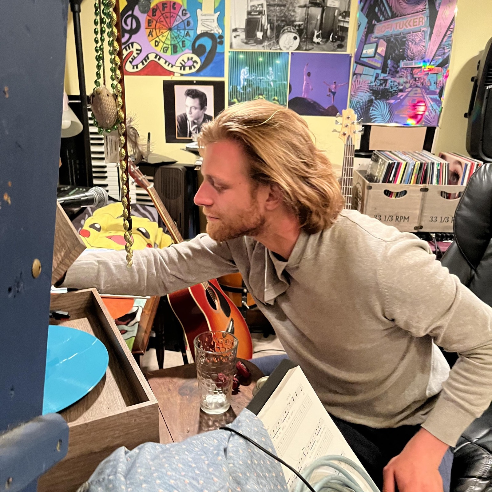

Kieran Edward James Specht picked up his first pair of headphones as a DJ in a South Bay Los Angeles bedroom back in high school, and never really put them down. That hobby turned into a career: a degree in Audio Engineering and Live Sound from the Conservatory of Recording Arts and Sciences, then years on the road with 8th Day Sound, one of the biggest names in touring audio, building rigs and running shows for artists like Beyoncé, My Chemical Romance, Anderson .Paak, and RÜFÜS DU SOL, in rooms as big as the Hollywood Bowl and Crypto.com Arena.
When the touring world shut down in 2019, Kieran traded festival lots for the redwoods and settled in Humboldt County, picking up work with Cal Poly Humboldt's event program. The freelance gigs followed from there — Arcata Theater Lounge, Blue Lake Casino, Ferndale and North Coast Repertory Theaters — along with a quarterly DJ residency at the Blue Lake Wave Lounge that's still running. In 2024, he went back to school himself, this time as a Music major at Cal Poly Humboldt studying piano and composition, with a computer science minor sharpening the technical side even further.
That mix is what makes Specht Staging Solutions and DJ R3$pecht work the way they do. Kieran isn't just a technician who shows up and runs the board, and he isn't just a DJ who shows up with a laptop — he's spent a decade on both sides of the stage, which means one person can design a full sound and lighting build, run it clean, and then step up and perform on it. Fewer vendors, fewer handoffs, one person who actually understands the whole show.
Production and rentals, or Kieran himself behind the decks.